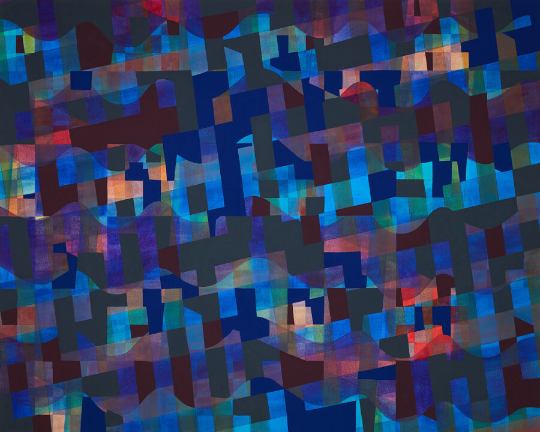

April Behnke: Off/Grid
McHenry County College is thrilled to host April Behnke’s solo exhibition, “Off/Grid,” featuring an artist talk on Wednesday, April 1, followed immediately by a reception.
March 9 – April 17, 2026
McHenry County College | Galleries One & Two
8900 U.S. Highway 14, Crystal Lake, IL 60012
Artist Talk & Reception: Wednesday, April 1
2:30-3:30 p.m. — Artist Talk in the Luecht Auditorium, B170 | Zoom available
3:30-4:30 p.m. — Reception in Gallery One, A212
Zoom link: https://mchenrycc.zoom.us/j/95821774254?pwd=rNyZKCS3Ca98vhakYHj2OsY07jdQJp.1 ──────────────────────